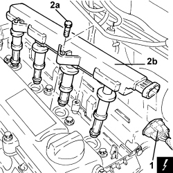

5510C14 IGNITION COIL/S - R.R.
- Path
- Procedures > 55 ELECTRICAL EQUIPMENT > 5510 ENGINE IGNITION > 5510C COIL, ECU, SENSORS > 5510C14 IGNITION COIL/S - R.R.
- Kind
- repair procedure (removal / refitting; the operation number is the code)
- Applies to
- engines: 2.2 JTS, 3.2 JTS; all production periods
- Interactive page
- https://sloeber94.github.io/elrnDB-aBrrSpdr/en/#/946002350
Applies to: engines: 3.2 JTS; all production periods
- To remove/refit the left cylinder head ignition coils,
Op. 5510C16 LEFT CYLINDER HEAD IGNITION COIL - R+R
- To remove/refit the right cylinder head ignition coils,
Applies to: engines: 2.2 JTS; all production periods
 Removing
Removing
 Refitting
Refitting- Make sure that the ignition key is in the OFF position, then disconnect the battery terminal (-).
Description | Connector | |
|---|---|---|
- | Battery |
- Undo the bolts and remove the coil cover.
1. Disconnect the electrical connection from the ignition coil module.
Description | Connector | |
|---|---|---|
1 | Ignition coil |
2. Undo the bolts (2a) and remove the ignition coil module (2b).

Applies to: engines: 2.2 JTS; all production periods
Refitting
Removing- Fit the ignition coil module in place and secure it using the bolts.
- Connect the electrical connection of the ignition coil module.
- Place the coil cover back in its housing and secure it using the bolts.
- Connect the negative battery terminal.
Topics linked from this page (4)
- 5510C16 LEFT CYLINDER HEAD IGNITION COIL - R+R
- 5510C18 RIGHT CYLINDER HEAD IGNITION COIL - R+R
- A001 BATTERY
- A030 IGNITION COIL
Topics that link to this page (12)
- B013 ENGINE STARTS WITH DIFFICULTY
- D001 ENGINE NOT RUNNING SMOOTHLY / (HESISTANT)
- D002 ENGINE NOT RUNNING SMOOTHLY / (LOSING POWER)
- D003 ENGINE NOT RUNNING SMOOTHLY / (IRREGULAR OPERATION)
- D005 ENGINE DOES NOT PRODUCE BEST PERFORMANCE
- D010 ENGINE IDLE IRREGULAR
- S001 ENGINE KNOCK
- X001 EXCESSIVE FUEL CONSUMPTION
- 5510CC IGNITION COIL CHECK
- 5510D10 SPARK PLUGS - R+R
- E5030 PETROL ENGINE ELECTRONIC MANAGEMENT - WIRING DIAGRAM
- E5030 PETROL ENGINE ELECTRONIC MANAGEMENT - COMPONENT LOCATION